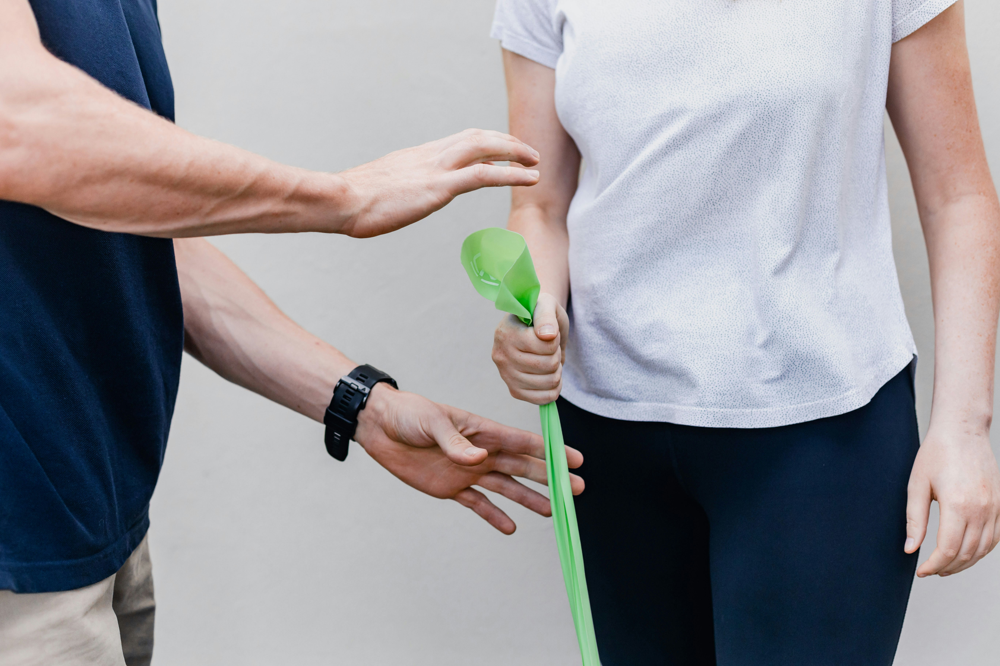
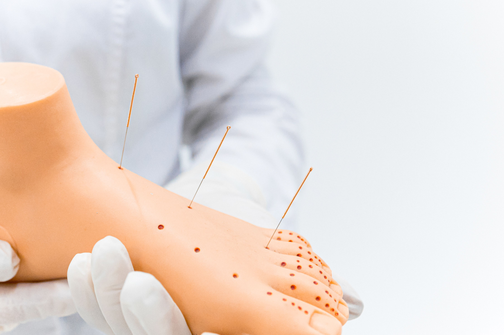
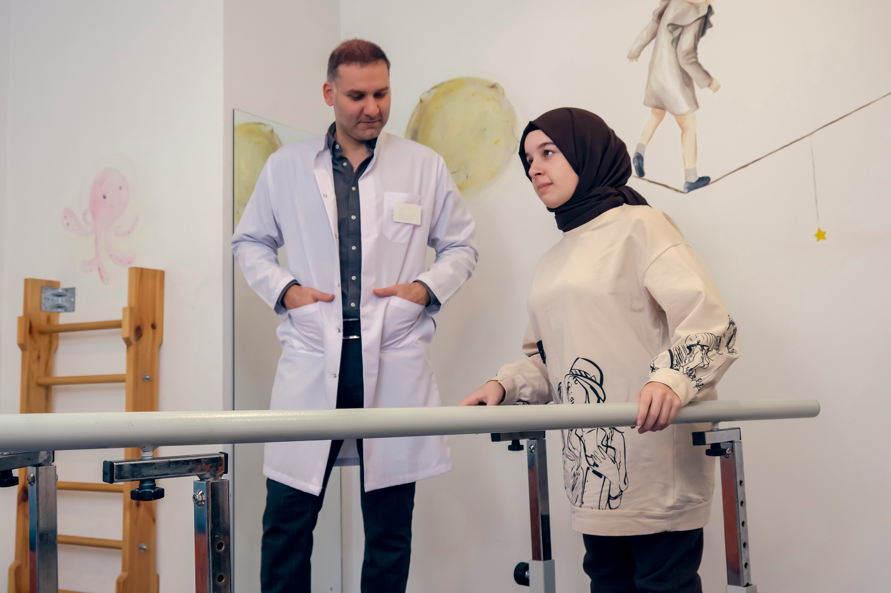

Sports Injury Rehabilitation
Targeted treatment and conditioning designed to safely accelerate recovery from sports-related injuries, helping you regain peak strength and get back on the field or court as fast as possible.

Post-Surgery Recovery
Comprehensive, guided physical therapy to manage pain, restore joint mobility, and rebuild muscle strength safely following surgical procedures, ensuring a smooth return to daily life.

Dry Needling
A specialized technique using fine needles to release painful muscle knots, alleviate chronic tension, and rapidly improve localized blood flow and movement flexibility.

Occupational Therapy
Customized therapeutic interventions focused on helping you regain the functional movement, fine motor skills, and independence needed to easily manage daily work and life activities.

Post-Op Rehab
Structured, phase-based rehabilitation plans tailored to your specific orthopedic or medical procedure, focused on restoring full functionality and long-term joint health.